CS184/284A Fall 2026 Homework 1 Write-Up
Link to webpage: https://cal-cs184-student.github.io/hw1-jerrychen0718-writeup/
Link to GitHub repository: https://github.com/cal-cs184-student/hw1-jerrychen0718-writeup
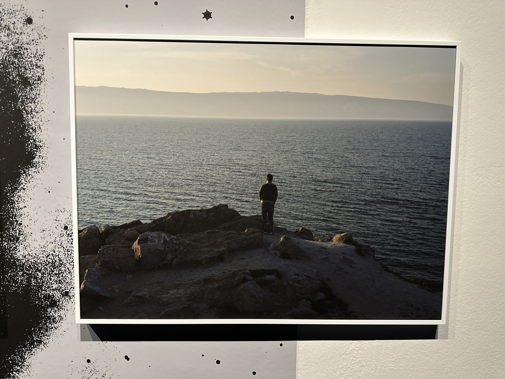
Overview
In this homework, I built a software rasterization pipeline that converts vector-based geometry into pixels while exploring several of the fundamental ideas behind modern computer graphics. I started by implementing triangle rasterization using edge functions and bounding boxes, and then extended the rasterizer with supersampling to reduce aliasing. I also implemented geometric transformations, barycentric interpolation for smoothly varying vertex colors, texture mapping, nearest and bilinear texture sampling, and mipmapping with different pixel and level sampling methods.
One of the most important things I learned from this project is that rendering quality is fundamentally connected to how we sample a continuous scene onto a discrete pixel grid. Supersampling, bilinear filtering, and mipmapping approach aliasing from different perspectives, but they all address the same underlying problem: a single pixel cannot perfectly represent all of the information in a continuous image. Implementing these techniques myself made the relationship between sampling theory and the visual artifacts in an actual renderer much more concrete.
I also explored several extra-credit extensions, including interactive viewport rotation, an optimized triangle rasterizer, jittered supersampling, and anisotropic texture filtering. These extensions helped me think about graphics from an engineering perspective: improving image quality often requires a tradeoff between computational cost, memory usage, and visual accuracy. For the art competition, I also wrote a procedural SVG generator that recreates a fireworks photograph using geometric primitives and particle-like trajectories, which was a fun way to combine the mathematical ideas from the assignment with a more artistic application.
Overall, this homework helped me understand rasterization not as a collection of isolated algorithms, but as a complete pipeline: transform geometry, determine coverage, interpolate attributes, sample textures, filter signals, and finally resolve samples into pixels. Seeing how each stage affects the final image was the most valuable part of the project.
Task 1: Drawing Single-Color Triangles
Triangle Rasterization
For the resterization of triangle, I first compute the axis-aligned bounding box of the triangle, which is the restricted area for our graph, by using the minimum and maximum x and y coordinates of its three vertices. I round these bound by using the method floor and ceil, and I clamp them to the framebuffer dimensions, so I only examine the pixels in the region that can possibly overlap the triangle.
For each pixel in the bounding box, I test a sample at the center of the pixel. Every pixel correspond to one sample, which is located at (x + 0.5, y + 0.5). Then I use three edge functions, one for each edge of the triangle. They can be used to determine which side of each directed edge the sample lies on. If all three edge functions' value are nonnegative, or if all three are nonpositive, the sample lies inside or outside of the boundary of the triangle and is colored. Checking both signs also makes the algorithm work for both clockwise and counter-clockwise vertex orderings.
Bounding Box Efficiency
The algorithm is no worse than bounding-box rasterization because it never checks pixels outside the triangle's axis-aligned bounding box. If the bounding box width W and height H, at one sample per pixel the algorithm performs at most W * H constant-time point-in-triangle tests. Therefore, its work is proportional to the number of pixels in the bounding box rather than the size of the entire framebuffer.
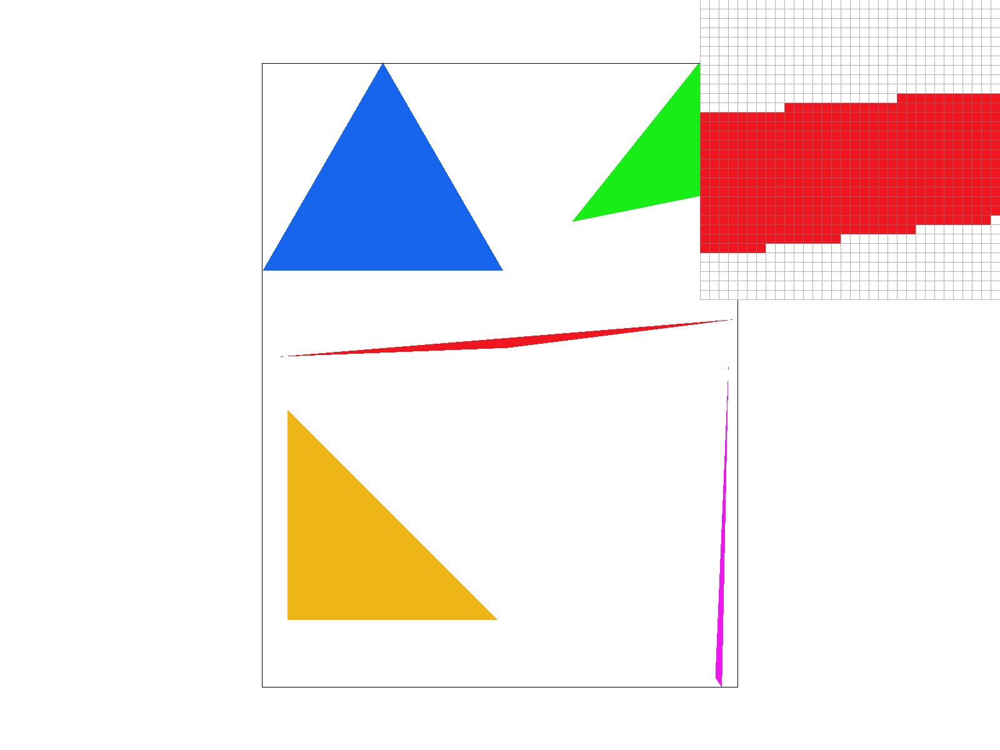
Extra Credit: Optimized Triangle Rasterization
I also implemented an optimized version of the triangle rasterizer. The basic implementation evaluates all three edge functions from scratch for every subsample inside the bounding box. However, neighboring subsamples are separated by a constant displacement, which means that much of this arithmetic is redundant.
My main optimization is incremental edge-function evaluation. Consider an edge function of the form
E(x, y) = Lx(y - y0) - Ly(x - x0).
When moving vertically from one subsample to the next, x remains unchanged and y increases by a constant amount. If there are n = sqrt(sample_rate) samples along each dimension, neighboring subsamples are separated by 1/n in the y direction. Therefore, the edge-function value changes by a constant amount:
ΔEy = Lx / n.
Instead of recomputing the complete edge function at every subsample, I compute its value normally at the first subsample in each vertical subpixel column. The remaining edge values in that column are generated incrementally using additions.
float step_y_0 = Lx_01 * inv_n;
float step_y_1 = Lx_21 * inv_n;
float step_y_2 = Lx_02 * inv_n;
...
edge_0 += step_y_0;
edge_1 += step_y_1;
edge_2 += step_y_2;This replaces many repeated multiplications and subtractions in the innermost loop with simple additions.
Additional Loop Optimizations
I also factored several invariant computations out of the inner loops. First, I compute 1.0f / n once and reuse it when computing subpixel positions instead of repeatedly dividing by n. Second, the starting sample-buffer index for a pixel, (y * width + x) * sample_rate, is computed once per pixel rather than repeatedly for each covered subsample.
These optimizations do not change which samples are tested or the triangle coverage rule. They reduce the amount of arithmetic required for each tested sample. I verified that switching between the basic and optimized implementations produces the same rendered image.
Performance Comparison
To measure the performance improvement, I added a runtime toggle that switches between the original and optimized triangle rasterizers. I measured the execution time around svg.draw() using precise C++ timing instrumentation.
The experiment used basic/test4.svg at 16 samples per pixel. The viewport, sample rate, and all other rendering settings were kept unchanged. I alternated between the basic and optimized implementations to reduce the effect of unrelated timing variation between runs.
| Implementation | Average Render Time (ms) |
|---|---|
| Basic Bounding-Box Rasterizer | 7.847 ms |
| Optimized Incremental Rasterizer | 5.479 ms |
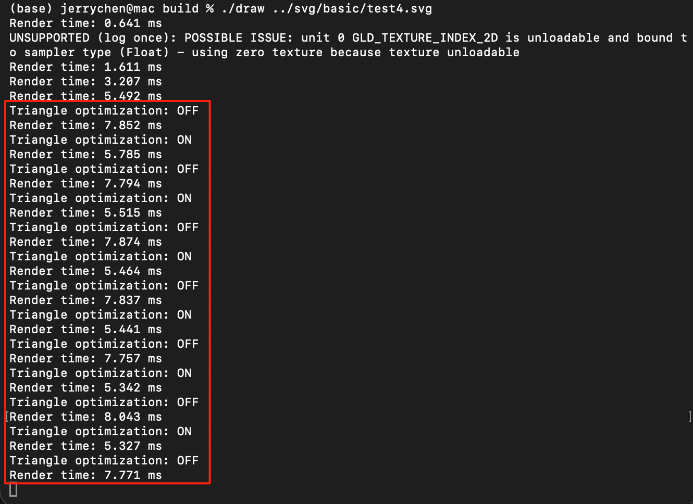
Performance Analysis
The average render time decreased from approximately 7.847 ms for the basic implementation to 5.479 ms for the optimized implementation.
The resulting speedup is:
Speedup = 7.847 / 5.479 ≈ 1.43×.
This corresponds to approximately a 30.2% reduction in measured render time. The improvement comes primarily from replacing repeated edge-function arithmetic in the innermost sampling loop with incremental additions, while also moving invariant division and sample-buffer index calculations outside the inner loops.
Both the basic and optimized implementations produce the same rasterization result, so the optimization improves performance without changing the rendered output.
Task 2: Antialiasing by Supersampling
Supersampling Algorithm
I divide each pixel into a sqrt(sample_rate) by sqrt(sample_rate) grid and test one sample at the center of each subpixel. Each sample is independently tested against the triangle and its color is stored in the sample buffer. After rasterization, I average all samples belonging to each pixel to produce the final pixel color.
Supersampling reduces aliasing because multiple samples give a better estimate of how much of a pixel is covered by a triangle. Pixels near triangle edges can therefore have intermediate colors instead of being completely inside or outside, making the edges appear smoother.
To support supersampling, I resized the sample buffer to store width * height * sample_rate colors. I also updated triangle rasterization to write individual samples, fill_pixel() to fill all samples for points and lines, and resolve_to_framebuffer() to average the samples into the final framebuffer.
Sample Rate Comparison
|
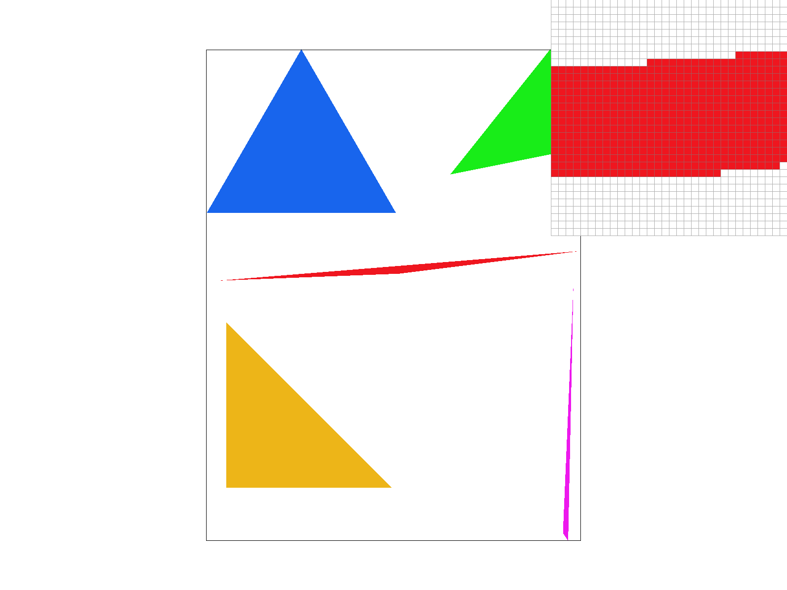 |
|
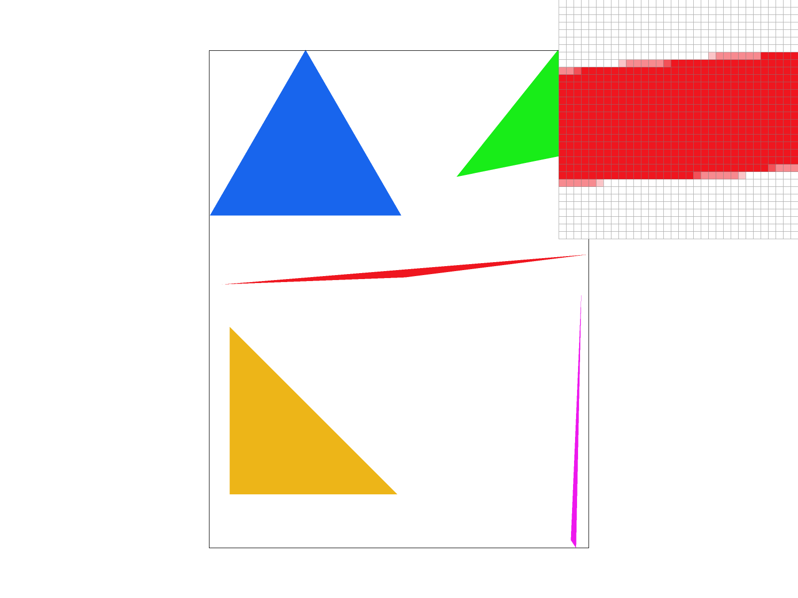 |
|
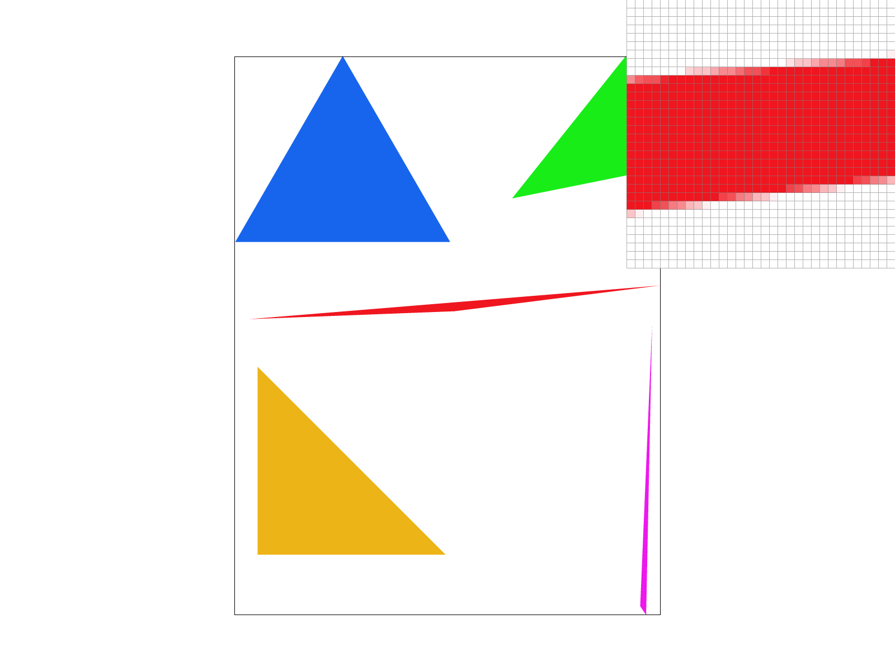 |
Extra Credit: Jittered Supersampling
I implemented jittered supersampling as an alternative to the regular grid sampling pattern. In the original implementation, each subsample is placed at the center of its cell in an n-by-n grid. In the jittered implementation, I still divide each pixel into the same n-by-n strata, but randomly perturb the sample position within each stratum. Therefore, the number of samples per pixel remains unchanged.
Regular grid sampling can produce structured aliasing when high-frequency geometry aligns with the periodic sampling lattice. Jittering breaks this regular alignment. It does not eliminate aliasing, but tends to convert coherent aliasing patterns into less structured sampling noise.
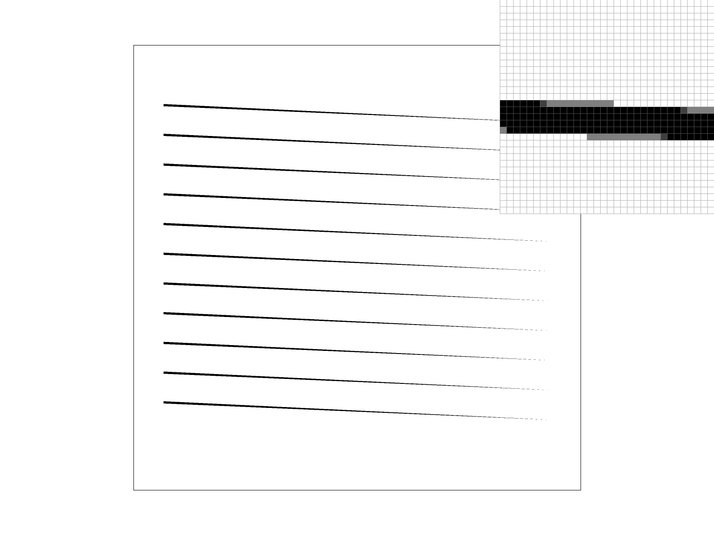
I created a test scene containing a set of long, very thin triangles. Their narrow widths and shallow slopes make the geometry particularly sensitive to the locations of the subsamples. With the regular grid, the periodic sample locations can repeatedly hit or miss portions of the thin triangles, producing more structured coverage artifacts. With jittered sampling, the sample positions are distributed within their grid cells, breaking this repeated alignment and making the remaining artifacts less spatially coherent.
Task 3: Transforms
I redesigned Cubeman with a green-and-black split color scheme inspired by Kamen Rider W. I used hierarchical translations, rotations, and scaling to give the robot a more dynamic pose, including tilted limbs and a slightly rotated head. The arm transforms are hierarchical, so rotating an upper arm also changes the position and orientation of its attached forearm.
Design Inspiration and Result
|
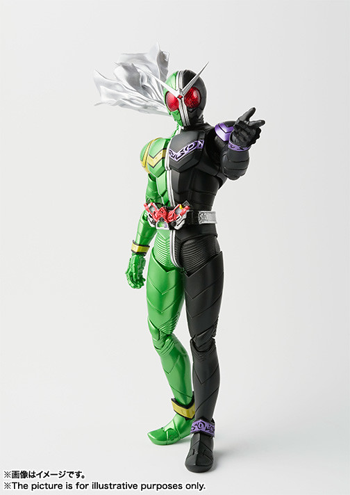
Kamen Rider W Reference Image
|
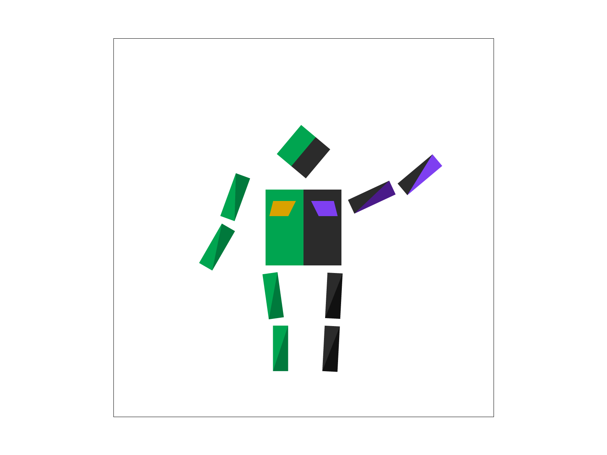
My Kamen Rider W-Inspired Cubeman
|
Extra Credit: Interactive Viewport Rotation
Overview
For the GUI extra credit, I implemented an interactive viewport rotation feature. Two keyboard controls allow the rendered SVG to rotate in opposite directions. Each key press changes the current rotation angle by 5 degrees and redraws the scene. Pressing the space bar resets the view, including the rotation angle, back to its original 0-degree orientation.
Instead of modifying the coordinates of individual SVG primitives, I apply the rotation as part of the viewing transformation. This means that the entire rendered SVG is rotated consistently as a single view.
Implementation
I added a persistent viewport_rotation variable to the DrawRend class to store the current rotation angle. The keyboard event handler updates this angle in increments of 5 degrees and then redraws the scene.
case 'Q': viewport_rotation += 5.0f; redraw(); break; case 'E': viewport_rotation -= 5.0f; redraw(); break;
I also modified the existing reset operation so that pressing the space bar restores the rotation angle to zero in addition to resetting the original view transformation.
case ' ': viewport_rotation = 0.0f; view_init(); redraw(); break;
Modification to the Transformation Stack
The original rendering pipeline first transforms a point from SVG coordinates into normalized device coordinates (NDC), and then transforms the NDC coordinates into screen coordinates:
p_screen = M_ndc_to_screen * M_svg_to_ndc * p_svg
In this renderer, the visible NDC region is the square [0,1] x [0,1]. Therefore, the center of the viewport in NDC coordinates is:
(0.5, 0.5)
Applying a rotation matrix directly in NDC space would rotate the SVG around the NDC origin (0,0). This would cause the SVG to orbit around the corner of the viewport instead of rotating around the center of the screen.
To rotate around the center of the viewport, I use three transformations:
-
Translate the viewport center from
(0.5,0.5)to the origin. -
Apply the rotation matrix
R(theta). -
Translate the viewport center back to
(0.5,0.5).
Therefore, the viewport rotation matrix is:
M_rotation =
T(0.5, 0.5) *
R(theta) *
T(-0.5, -0.5)
I inserted this rotation between the existing SVG-to-NDC transformation and the NDC-to-screen transformation. The complete transformation stack becomes:
p_screen =
M_ndc_to_screen *
T(0.5, 0.5) *
R(theta) *
T(-0.5, -0.5) *
M_svg_to_ndc *
p_svg
Because matrix transformations are applied from right to left, an SVG point is first transformed into NDC space. The NDC center is then translated to the origin, the rotation is applied, and the center is translated back. Finally, the transformed NDC coordinate is mapped into screen space.
In the implementation, I construct the viewport rotation matrix and insert it into the existing matrix stack before drawing the SVG:
Matrix3x3 viewport_rotate = translate(0.5f, 0.5f) * rotate(viewport_rotation) * translate(-0.5f, -0.5f); Matrix3x3 svg_to_screen = ndc_to_screen * viewport_rotate * svg_to_ndc[current_svg]; svg.draw(software_rasterizer, svg_to_screen);
Results
The following images demonstrate the interactive viewport rotation. The first image shows the viewport rotated clockwise, the second shows rotation in the opposite direction, and the third shows the view after resetting the rotation back to 0 degrees.
|
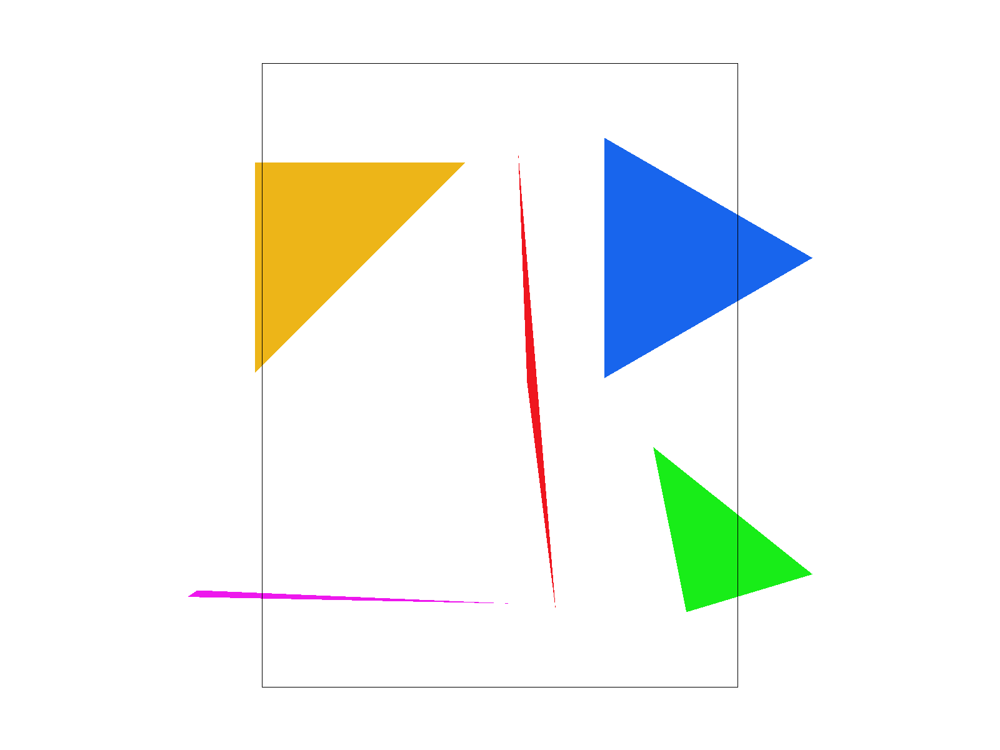 |
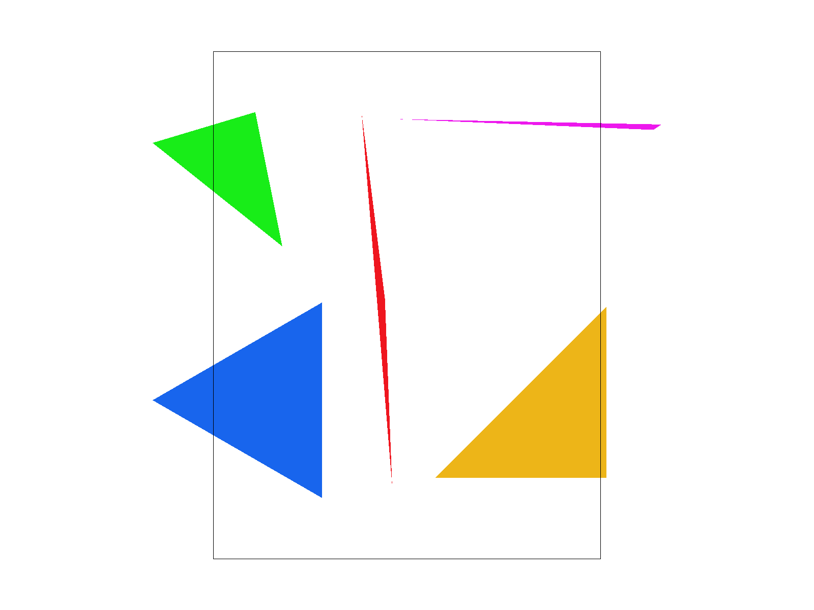 |

|
Discussion
The results show that the transformation is applied to the complete SVG view rather than to individual triangles or other primitives. Both rotation directions use the same persistent viewport angle, with the two keyboard controls changing that angle in opposite directions.
Performing the rotation in NDC space also makes the implementation independent of the dimensions of a particular SVG. Since every SVG is first mapped into the same normalized [0,1] x [0,1] coordinate system, the center of rotation is always (0.5,0.5). The existing NDC-to-screen transformation can then map the rotated result into the framebuffer as usual.
This implementation preserves the existing rasterization pipeline while adding the new GUI behavior entirely through transformation composition.
Task 4: Barycentric coordinates
Barycentric Coordinates
Barycentric coordinates represent a point inside a triangle as a weighted combination of the triangle's three vertices. For a point P, the three weights are alpha, beta, and gamma, where alpha + beta + gamma = 1. A larger weight means that the point is influenced more strongly by the corresponding vertex.
For color interpolation, I use the same barycentric weights to combine the three vertex colors:
C(P) = alpha C0 + beta C1 + gamma C2
Therefore, a sample close to the red vertex receives a larger contribution from red, while samples between multiple vertices receive a mixture of their colors. Since the barycentric weights vary continuously across the triangle, the resulting colors also change smoothly.

Color Wheel Result
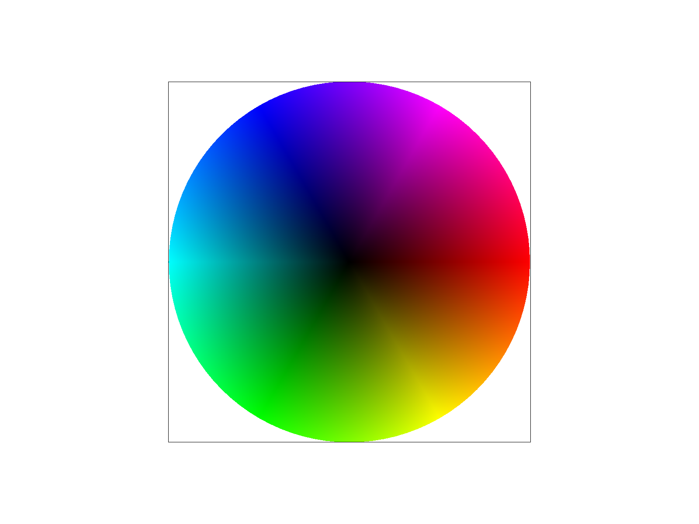
Task 5: "Pixel sampling" for texture mapping
Pixel Sampling and Texture Mapping
Texture mapping assigns a 2D texture coordinate (u, v) to each vertex of a triangle. For each sample inside the triangle, I first compute its barycentric coordinates and use them to interpolate the texture coordinates:
(u, v) = α(u0, v0) + β(u1, v1) + γ(u2, v2).
The interpolated texture coordinate is then used to sample a color from the texture. I implemented both nearest-neighbor and bilinear pixel sampling at mipmap level zero.
Nearest-Neighbor vs. Bilinear Sampling
Nearest-neighbor sampling selects the single texel closest to the interpolated texture coordinate. It is simple and fast, but can produce abrupt changes between neighboring texels and therefore appear more pixelated.
Bilinear sampling instead uses the four texels surrounding the texture coordinate. It first interpolates between texels horizontally and then interpolates vertically between the two results. This produces a smoother transition between neighboring texels.
Sampling Comparison
|
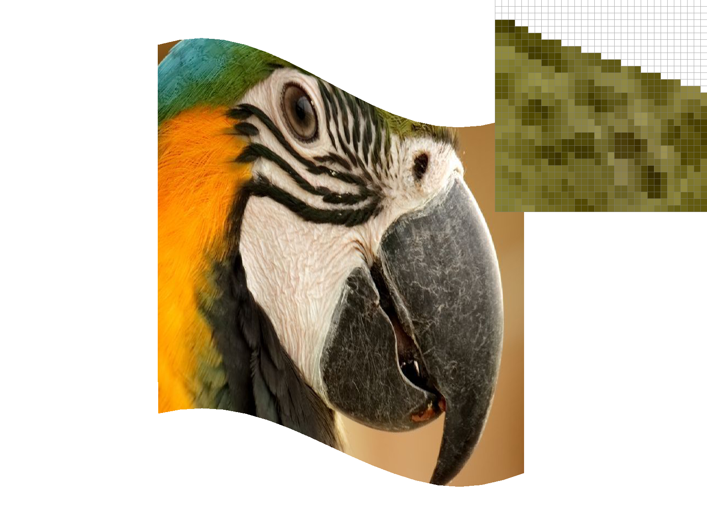 |
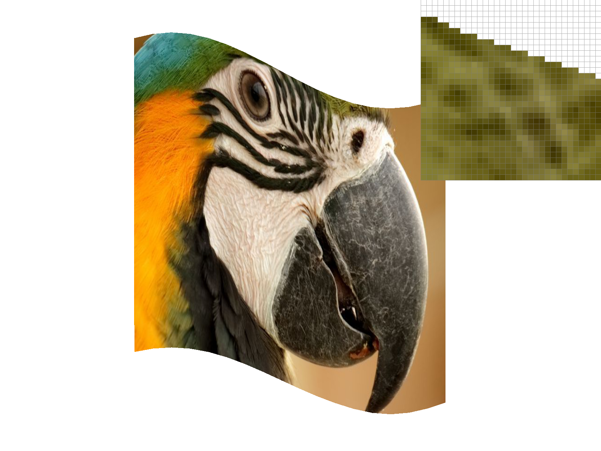 |
|
|
|
Comparison
Nearest-neighbor sampling produces sharper but more abrupt transitions between texels, which make pixelation and alising more visible, especially around fine texture details. Bilinear sampling blends four neighboring texels and therefore produces smoother transitions.
Increasing the sample rate from 1 to 16 samples per pixels improves supersampling of the rasterized triangle, while changing from nearest to bilinear changes how the texture itself is sampled at each sample location. The difference between nearest and bilinear sampling is most noticeable when the texture is magnified or when a sample falls between texel centers, because nearest sampling chooses onlu one texel while bilinear sampling blends information from four nearby texels.
Task 6: "Level Sampling" with mipmaps for texture mapping
Implementation
For level sampling, I first compute the texture coordinates at the current sample position, as well as at positions one pixel to the right and one pixel above it. These give p_uv, p_dx_uv, and p_dy_uv. The differences between these texture coordinates approximate how quickly the texture coordinates change across one screen-space pixel.
In Texture::get_level(), I convert the UV differences into texel-space derivatives by multiplying the horizontal UV component by the width of mipmap level 0 and the vertical UV component by its height. I then compute the lengths of the two derivative vectors:
Dx = sqrt((du/dx · width)2 + (dv/dx · height)2)
Dy = sqrt((du/dy · width)2 + (dv/dy · height)2)
I use the larger of these two values to estimate how many texels a screen-space pixel covers:
D = max(Dx, Dy)
The desired mipmap level is then computed as:
L = log2(D)
If the footprint is no larger than one texel, I use level 0. As the texture becomes smaller on screen, one screen pixel covers more texels, so the computed value of L increases and a lower-resolution mipmap level can be selected.
Level Sampling Methods
I implemented the level sampling modes by using the level computed from the screen-space texture derivatives. With L_ZERO, the renderer always samples mipmap level 0 regardless of the size of the texture on screen. With L_NEAREST, I compute the desired floating-point mipmap level and round it to the nearest integer level.
The purpose of level sampling is to choose a texture resolution that better matches the screen-space sampling rate. When a high-resolution texture is displayed at a much smaller size, directly sampling level 0 can preserve frequencies that cannot be represented by the available screen pixels. Using an appropriate mipmap level prefilters the texture and helps reduce this aliasing.
Comparison of Pixel and Level Sampling
To compare pixel sampling and level sampling, I used a 1200 by 1200 texture containing many high-frequency details, including thin rain streaks, railings, vegetation, character outlines, and small color variations. I rendered a minified version of the texture and kept the same view and pixel-inspector location for each screenshot so that the results can be compared directly.
|
Level 0 with nearest-neighbor pixel sampling. |
Level 0 with bilinear pixel sampling. |
|
Nearest mipmap level with nearest-neighbor pixel sampling. |
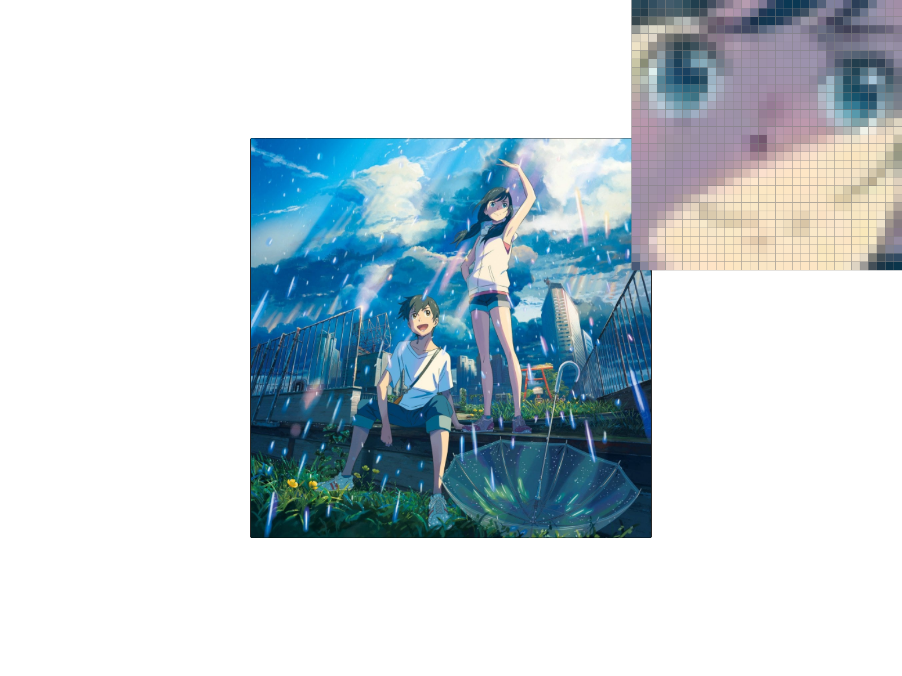 Nearest mipmap level with bilinear pixel sampling. |
Discussion
Pixel sampling and level sampling affect different parts of the texture filtering process. Pixel sampling determines how a color is reconstructed within one mipmap level. With P_NEAREST, the closest texel is used directly. This is inexpensive, but transitions between neighboring texels can appear more blocky. With P_LINEAR, the renderer interpolates between four neighboring texels, producing smoother color transitions.
This difference can also be observed in the pixel inspector. With nearest sampling, individual texel colors are more directly visible, while bilinear sampling blends information from neighboring texels and therefore produces smoother transitions around features such as the character outlines and facial details.
Level sampling addresses a different problem. L_ZERO always samples from the original highest-resolution texture, while L_NEAREST estimates the screen-space texture footprint and selects the nearest appropriate mipmap level.
In these results, the overall difference between L_ZERO and L_NEAREST is relatively subtle because the amount of texture minification is moderate. However, mipmapping becomes increasingly important as the texture becomes smaller on screen. In that situation, one screen pixel corresponds to many texels from the original texture. Sampling directly from level 0 can undersample these high-frequency details and produce aliasing, while selecting a lower-resolution mipmap level provides a prefiltered representation that better matches the screen-space sampling rate.
Tradeoffs
P_NEAREST is computationally inexpensive because it requires only one texel lookup, but it can produce blockier transitions and stronger sampling artifacts. P_LINEAR requires four nearby texel samples and additional interpolation, increasing computation while generally producing smoother results.
For level sampling, L_ZERO always accesses the original texture level and does not need to choose among mipmap levels. However, this can cause aliasing when the texture is strongly minified. L_NEAREST requires computation of the texture footprint and additional memory to store the mipmap pyramid, but it can select a texture resolution that more closely matches the screen-space resolution.
Therefore, there is a tradeoff between speed, memory usage, and antialiasing quality. Nearest-neighbor pixel sampling is faster but provides less filtering, while bilinear sampling performs more work for smoother interpolation. Mipmapping requires additional memory, but it improves sampling quality when high-resolution textures are displayed at smaller sizes.
Extra Credit: Anisotropic Filtering
Implementation
I implemented an approximate anisotropic texture filtering method using the screen-space UV derivatives already computed for mipmapping. I convert the UV derivatives into texel-space vectors and use their lengths to approximate the major and minor directions of the pixel's texture footprint.
The anisotropy ratio is computed as the ratio between the major and minor footprint lengths. In my test scene, this ratio was approximately 3.57, so my implementation used ceil(3.57) = 4 samples along the major direction. I cap the number of anisotropic samples at 8.
Instead of selecting the mip level from the largest footprint dimension, I select it using the minor-axis footprint:
level = log2(minor_length)
At each sampling position along the major direction, I perform bilinear sampling at the two neighboring mip levels and linearly interpolate between them. The samples along the major direction are then averaged to produce the final pixel color.
Comparison with Other Sampling Methods
I compared nearest, bilinear, trilinear, and anisotropic filtering using the same texture, geometry, viewport, zoom level, and sample rate. The screenshots below show the same zoomed-in region so that the differences between the filtering methods are easier to observe.
|
|
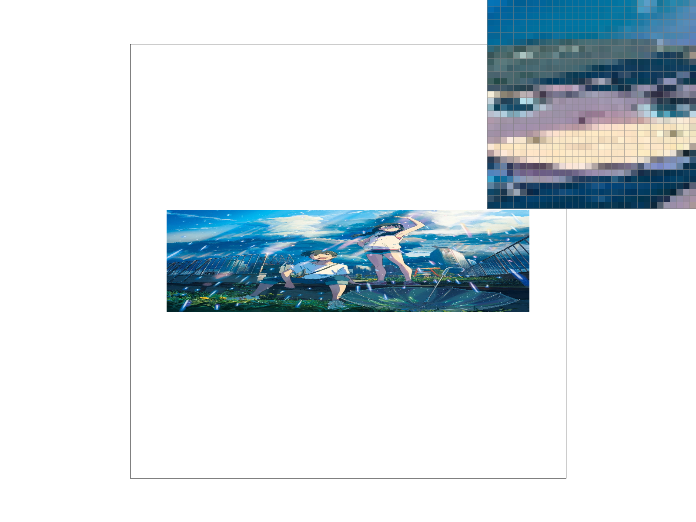 |
|
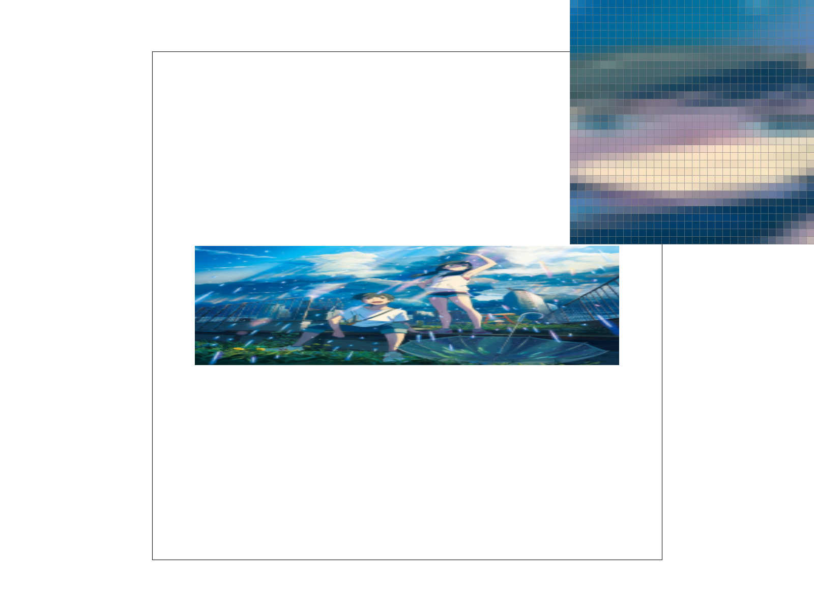 |
|
Visual Comparison
Nearest-neighbor sampling preserves sharp transitions, but it also produces the strongest aliasing because each sample selects only one texel. Bilinear filtering smooths these transitions by interpolating between four neighboring texels, although minification aliasing can still remain.
Trilinear filtering additionally interpolates between adjacent mip levels, which reduces minification artifacts. However, conventional mipmapping uses a single isotropic level of detail even when the pixel footprint is strongly elongated in texture space.
In the zoomed-in comparison, my anisotropic result appears smoother than the other methods. This is consistent with the implementation: several filtered samples are taken along the major direction of the elongated footprint and then averaged. Therefore, the goal is not simply to maximize apparent sharpness, but to better approximate the texture area covered by the screen pixel and reduce directional aliasing.
Performance Comparison
I used clock() to measure rendering performance under the same scene and viewing conditions. Multiple measurements were taken for each method and averaged.
| Filtering Method | Average Render Time (ms) |
|---|---|
| Nearest | 3.635 |
| Bilinear | 7.123 |
| Trilinear | 20.961 |
| Anisotropic | 50.488 |
The measured cost increases from nearest to bilinear to trilinear to anisotropic filtering. Nearest-neighbor sampling requires only a single texel lookup, while bilinear sampling combines four neighboring texels. Trilinear filtering performs bilinear filtering at two mip levels and interpolates between them. My anisotropic implementation is the most expensive because it performs multiple filtered samples along the major direction. With an anisotropy ratio of approximately 3.57 in this test, four samples were used along that direction.
This demonstrates the quality-performance tradeoff of texture filtering: more sophisticated filters can better account for the texture footprint, but require additional texture samples and therefore more computation.
Task 7: Extra Credit - Draw Something Creative!
Overview and Inspiration
For the art competition, I created a procedural fireworks scene inspired by one of my original fireworks photographs. Instead of using the photograph directly as a texture, I analyzed its composition and recreated the major visual elements using SVG primitives supported by the CS184 rasterizer.
I focused on several important features of the original scene: the large golden willow firework dominating the sky, smaller colored fireworks, smoke around the horizon, dark mountains, reflections on the water, silhouetted spectators, and a small boat in the foreground.
I wrote a Python script, src/generate_fireworks.py, to procedurally generate the SVG. The script itself does not render the final image. It only generates geometric SVG primitives. The resulting competition.svg is then rendered using my CS184 rasterizer.
Reference and Final Rendering
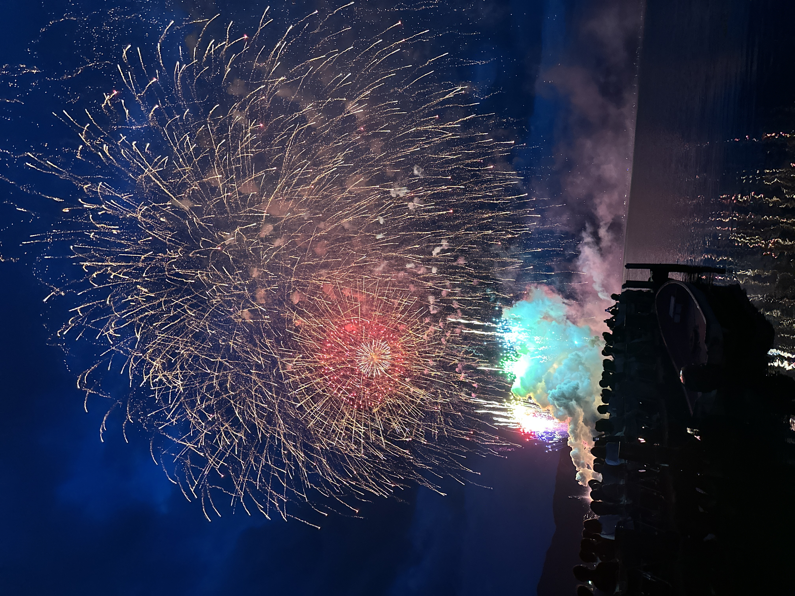
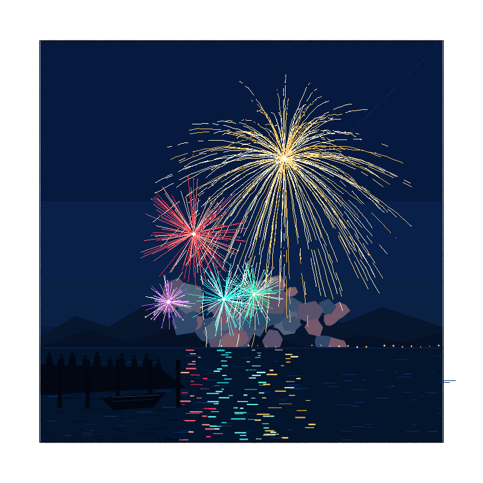
Procedural Generation
Rather than manually placing every firework particle, I generated the scene procedurally. The Python script constructs the final SVG from simple primitives such as <line>, <rect>, and <polygon>. This was especially useful because the rasterizer does not support general SVG path curves.
I divided the scene into several layers. The background contains the night sky and mountain silhouettes. Fireworks and smoke are generated in the middle layers, while the lake, reflections, people, dock, and boat form the foreground. Building the scene in this order also controls which objects visually overlap other objects.
Golden Willow Firework
The largest feature in the reference photograph is the golden willow-style firework. I modeled each branch as a small particle trajectory. A particle begins near the explosion center with an initial velocity determined by a randomly generated direction and speed.
The initial velocity can be written as
vx = v cos(θ),
vy = v sin(θ)
I then approximate the motion of each particle using a simple ballistic trajectory:
x(t) = x0 + vxt
y(t) = y0 + vyt +
1/2 gt2
Since SVG coordinates increase downward in the y direction, the positive gravity term causes the trails to gradually bend downward. This produces the characteristic hanging shape of a willow firework.
Approximating Curved Trails with Lines
The project rasterizer does not support SVG <path> elements, so I could not simply draw each firework trail as a Bezier curve. Instead, I sample several positions along each particle trajectory and connect consecutive positions with short <line> segments.
With enough segments, the individual straight lines visually approximate a curved trajectory. This is similar to approximating a continuous curve with a polyline.
I also introduce variation in particle velocity, trail length, brightness, direction, and small positional perturbations. Some trail segments are intentionally omitted, and additional small sparks are generated around the main trails. These variations prevent the firework from looking like a perfectly uniform geometric pattern.
Secondary Radial Fireworks
I used a second procedural generator for the smaller red, cyan, green, and purple fireworks. These fireworks are primarily radial rather than strongly affected by gravity.
For each burst, the script selects many directions around the explosion center and generates line segments extending outward. Random variation in direction, radius, brightness, and segment length creates less uniform and more organic-looking bursts.
Using multiple firework generators allowed me to reproduce the contrast in the reference image between the large drooping golden firework and the smaller circular colored explosions.
Smoke and Background Geometry
The lower part of the sky contains smoke illuminated by the fireworks. Because smooth volumetric smoke is difficult to represent using the supported SVG primitives, I approximate the smoke using overlapping irregular polygons with dark blue, gray, and purple tones.
The distant mountain silhouettes are also constructed from polygons. Their dark colors separate the bright sky from the lake while preserving the nighttime silhouette visible in the reference photograph.
Water and Reflections
The water reflections are generated separately from the fireworks. Instead of producing perfect mirror copies, I reuse colors from the fireworks and generate many short horizontal lines and rectangles below the horizon.
Their positions and lengths are varied so that the reflections become fragmented across the water surface. The horizontal spread increases in portions of the lower image, helping the reflection appear less like a geometric copy of the firework and more like light scattered across moving water.
Additional blue horizontal streaks are used to suggest the surface structure of the lake and separate the foreground water from the dark background.
Foreground Silhouettes
The foreground is constructed from simple geometric silhouettes. People are approximated using small polygons and rectangles, while the dock and boat are assembled from larger polygonal shapes.
These objects intentionally remain very dark because their main purpose is to establish depth and reproduce the strong foreground silhouettes of the reference photograph without distracting from the fireworks.
Reproducibility
Because many parts of the scene use randomized particle positions and lengths, I use a fixed random seed in the generator:
random.seed(184)
This keeps the procedural generation deterministic. Running generate_fireworks.py again therefore produces the same SVG composition instead of generating a different firework arrangement every time.
Final Result
The final scene is stored as competition.svg. I rendered this SVG using my CS184 rasterizer and used the viewer's S command to save the final screenshot. The submitted rendering is exactly 800×800 pixels.
Overall, this project was an experiment in representing an organic, photographic scene using only simple geometric primitives. The most interesting part was converting the continuous motion of firework particles into many discrete line segments while still preserving the recognizable shape and layering of the original photograph.